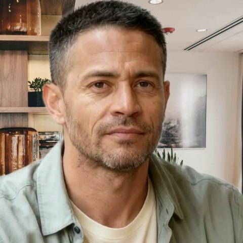
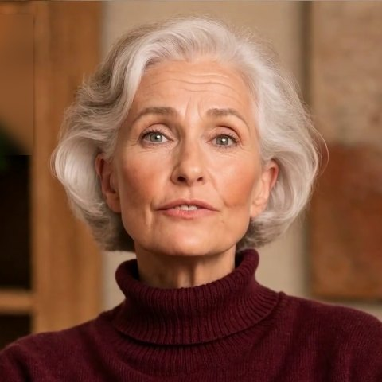
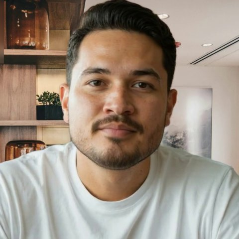

Teaching guide
Guided prompts and assignments for each case
These prompts and assignments are offered for instructors to adapt. Each case follows the same sequence: a short preparation prompt before viewing, a pause at the scripted decision point so every student commits to a response before discussion, then debrief questions and an assignment. Competency tags refer to the 2022 CSWE Educational Policy and Accreditation Standards (EPAS). Each case also lists a non-AI pathway so that students who decline AI-mediated material can meet the same objective (checklist item 11).
Select a case to open its prompts and assignments.

Case 1Marcus, 34Dignity and worth of the person
Before viewing
What assumptions might you bring to a veteran who discloses heroin use at an intake for emergency housing? Where did those assumptions come from?
At the decision point
Marcus asks, "Can you help with that or not?" Before discussion, write the first two or three sentences you would say to him. Then decide: meet the housing request first, or lead with treatment? Write your choice and one sentence of reasoning before watching either path.
Debrief questions
- What does each sentence you wrote communicate about Marcus's dignity and worth as a person?
- Marcus says the VA made him feel "like I was the problem." In Path B he says the worker sounded like the VA "almost word for word." What in the worker's response produced that, and how could yours avoid it?
- After Path A, list what Marcus disclosed that he had not disclosed in the opening. What does "something I can carry" refer to, and what does his asking for it make possible tonight?
- After Path B, what did the conditions-first response cost? What did the worker never learn, and where is Marcus sleeping tonight?
- What does Marcus need tonight, and what might he need next week? How would you sequence housing, substance use, trauma, and his distrust of services?
- What can you honestly promise him tonight, and what can you not promise? How would you say so?
- Does anything in his disclosure, in either path, raise a reporting obligation in your state? What would change that answer?
Assignment suggestions
Competencies 1 and 6
First response and rationale
Write a 150 to 250 word first response to Marcus. In a one-page rationale, link each choice to the NASW Code of Ethics value of dignity and worth of the person, and name one response you considered and rejected.
Competencies 7 and 8
Tonight and this week
Map the local options for Marcus: emergency shelter, harm reduction services, and veteran-specific services inside and outside the VA. For each, note eligibility, hours, and intake steps, then write a two-column plan for tonight and for the next seven days.
Competency 6
Observed role-play
In groups of three, one student plays Marcus from the transcript, one responds, and one observes. The observer records each moment the response conveyed respect or judgment. Rotate roles and debrief as a group.
Non-AI pathway. Read the three transcripts in order (opening, Path A, Path B) and complete the first-response assignment from the written text instead of the video.
Case 2Desiree, 17Self-determination
Before viewing
What do you know about the transition from foster care to adulthood in your state, including extended care options?
At the decision point
At the end of the opening, decide: ask about Jay, or move on to the transition paperwork? Write your choice and one sentence of reasoning before watching either path.
Debrief questions
- What strengths does Desiree show in the opening? What in her plan concerns you?
- After Path A, list what she revealed about Jay. Which details are the strongest warning signs of exploitation, and why?
- After Path B, what did the easier meeting cost? What did you learn only in passing, and what did you never get to ask?
- How do you honor self-determination for a 17-year-old in care while addressing her safety? Where do your obligations differ because she is a minor?
- What would you need to know before deciding whether to make a report, and whom would you consult?
Assignment suggestions
Competencies 1 and 7
Comparing the paths
Write a two-page reflection that contrasts Path A and Path B: what each conversation revealed, the tension between self-determination and protection, and the next step you would take with Desiree.
Competency 8
Youth-centered transition and safety plan
Draft a transition plan built with Desiree rather than for her. Include housing, identification documents, education and income, extended care options, and a safety plan that addresses the relationship with Jay.
Competency 5
Policy brief
Research extended foster care eligibility and services in your state. Write a one-page brief for a youth in Desiree's position and one recommendation for improving how agencies present these options.
Non-AI pathway. Read the three transcripts in order (opening, Path A, Path B) and complete the comparison assignment.

Case 3Dr. Osei, 71Capacity and autonomy
Before viewing
What is the difference between a diagnosis of cognitive impairment and a determination that a person lacks capacity to make a specific decision?
At the decision point
Dr. Osei asks, "What exactly are you here to decide?" Write how you would describe your role and the purpose of the visit. Then decide: answer her question plainly, or reassure her and defer? Write your choice and one sentence of reasoning before watching either path.
Debrief questions
- What in Dr. Osei's account supports her ability to manage her own affairs? What would you still want to verify, and how?
- Capacity is decision-specific. Which decision is actually in question here, and who has the authority to make it?
- After Path A, Dr. Osei discloses word-finding trouble she has kept from her son. Does that disclosure change your assessment? Why did a plain answer produce it, and what does she ask for in return?
- After Path B, Dr. Osei ends the visit and invokes her attorney. What did the reassurance communicate to her? What are your obligations now, to her and to the referral source?
- How do you take the possibility of financial exploitation seriously without assuming her son's motives?
- How might ageist assumptions shape a referral like this one, or your own first impression?
- If she declines memory care and the assessment supports her capacity, what happens next?
Assignment suggestions
Competency 7
Capacity-focused assessment plan
Outline an assessment of Dr. Osei's decision-making capacity: the domains you would assess, collateral sources you would contact with her consent, any screening instruments your program teaches and their limits, and how you would document findings.
Competency 1
Ethical decision memo
Apply an ethical decision-making framework from your course to the conflict between Dr. Osei's autonomy, her son's authority under the power of attorney, and your duty to assess risk. Identify the values in tension and justify a course of action.
Competency 6
Family meeting role-play
Role-play a meeting with Dr. Osei and her son. One student facilitates, one plays each family member, and one observes how the facilitator keeps Dr. Osei at the center of the conversation.
Non-AI pathway. Read the three transcripts in order (opening, Path A, Path B) and complete the assessment plan from the written text instead of the video.

Case 4Tomás, 28Confidentiality
Before viewing
What do you know about how immigration status can affect a person's willingness to seek health or mental health care?
At the decision point
Tomás asks, "If I talk to you, who else finds out?" Write your honest answer about confidentiality and its limits in plain language. Then decide: tell him the truth, limits included, or promise total privacy? Write your choice and one sentence of reasoning before watching either path.
Debrief questions
- Tomás says, "Sometimes I think it would be easier to just not wake up." What must you ask next, and how would you ask it?
- After Path A, Tomás describes watching a coworker die and asks whether a name "goes anywhere." What did the honest answer about limits make possible? What do you ask now, and in what order: the risk screen, the trauma, or the name?
- After Path B, Tomás discloses a plan and the means and holds you to your promise. What are your obligations now, and what do you say to him about the promise you made? How would the conversation have differed if you had named the limits first?
- How did your answer about confidentiality balance honesty about its limits with his need to feel safe enough to keep talking?
- What trauma-related symptoms did you hear? What else would you want to learn, and when?
- What language access does Tomás need? How would you arrange an interpreter, and why not rely on family members?
- What should you know about your agency's data-sharing and immigration-related policies before you answer his question?
Assignment suggestions
Competencies 1 and 6
Confidentiality script
Write a one-minute explanation of confidentiality and its limits for Tomás in plain language. Then describe how you would deliver it with a qualified interpreter and what you would do if he chose to stop talking.
Competency 7
Suicide risk screening practice
Using the structured suicide risk screening tool your program teaches, write the questions you would ask Tomás, how you would respond to each possible level of risk, and how you would document the screen.
Competency 5
Agency policy review
Locate a local clinic's or your placement agency's policy on client data sharing and immigration status. Summarize what clients are told, identify one gap, and propose plain-language wording to close it.
Non-AI pathway. Read the three transcripts in order (opening, Path A, Path B), including the English translations of the Spanish lines, and complete the confidentiality script from the written text.